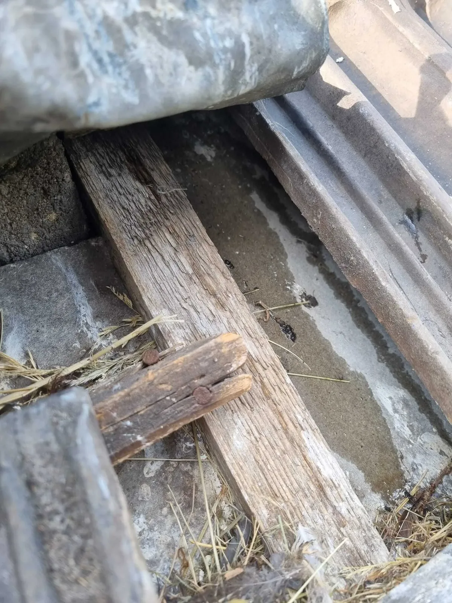
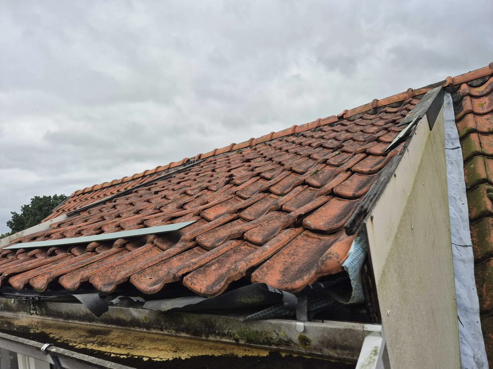
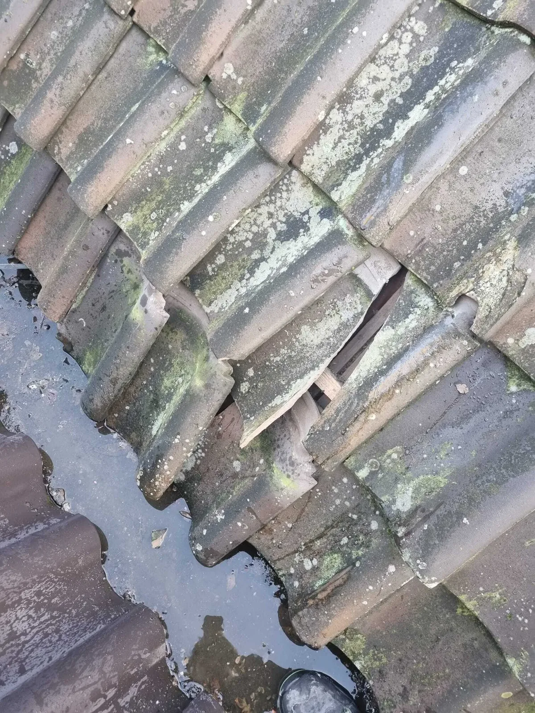

Lekkage opsporen: de oorzaak vinden zonder onnodig breekwerk
Een lekkage opsporen is zelden zo eenvoudig als het lijkt. Water laat zich pas zien waar het kan, niet waar het probleem ontstaat. Daardoor wordt de oorzaak vaak verkeerd ingeschat en blijft schade terugkomen.
Bij Daklekkages Opgelost richten we ons volledig op het gericht opsporen van lekkages, zodat herstel niet groter, duurder of ingrijpender wordt dan nodig.

Wat past bij jouw situatie?
Klik een kaart open. Je ziet direct de relevante uitleg, zonder dat er tekst verdwijnt.
? Twijfel
Twijfel je over de staat van je dak, maar zie je (nog) geen duidelijke lekkage? Dan is lekkage opsporen vaak de meest directe route naar zekerheid, omdat de zichtbare plek zelden de oorzaak is.
⛈ Na storm
�¡ Voor aankoop/verkoop
Bij (ver)koop wil je geen aannames. Opsporen geeft duidelijkheid over oorzaak en risico’s. Als formele onderbouwing nodig is, kan een rapportage een logische vervolgstap zijn.
Wanneer is lekkage opsporen verstandig?
Lekkage opsporen is vooral zinvol wanneer:
De oorzaak niet direct zichtbaar is
De schadeplek vertelt zelden waar het water binnenkomt.
Eerdere reparaties niet hebben geholpen
Als het terugkomt, is de waterweg vaak niet goed verklaard.
Water op wisselende plekken zichtbaar wordt
Water verplaatst zich via isolatie, dakbeschot en constructiedelen.
Er schade ontstaat zonder duidelijke regenval
Condens, capillaire werking of verborgen routes kunnen meespelen.
Waarom lekkages vaak verkeerd worden gerepareerd
Een veelgemaakte fout is het herstellen van de plek waar het water zichtbaar is. Dat voelt logisch, maar technisch klopt het zelden. Water verplaatst zich via isolatie, dakbeschot en constructiedelen. Daardoor kan de echte oorzaak zich meters verderop bevinden.
Zonder lekkageonderzoek bestaat het risico op herhaald terugkerende lekkage, oplopende gevolgschade aan hout en isolatie en onnodig openbreken van dak of interieur.
Lekkage opsporen draait daarom niet om snelheid, maar om zekerheid: de exacte ingang vaststellen zodat herstel gericht kan plaatsvinden.

Lekkage opsporen bij verschillende dakconstructies
Er bestaat geen standaardmethode die in alle situaties werkt. De gekozen techniek hangt af van het type dak, de aard van de klacht en de bouwkundige situatie.
Platte daken
Bij platte daken bevindt de oorzaak zich vaak bij naden, opstanden of doorvoeren. Water blijft langer staan, waardoor kleine imperfecties langzaam uitgroeien tot lekkages.
Schuine daken
Bij pannendaken spelen verschoven pannen, verouderde loodslabben en aansluitingen een grote rol. De lekkage toont zich vaak pas aan de binnenzijde, terwijl het probleem zich hoger op het dak bevindt.
Dakkapellen en dakramen
Extra dakonderbrekingen vergroten de kans op lekkage. Hier komen verschillende materialen samen die elk anders werken onder weersinvloeden.
Kwetsbare aansluitingen
Details rond randen, doorvoeren en schoorstenen zijn kritisch. Kijk ook bij loodafwerkingen en schoorsteenrenovatie.

Hoe wij een lekkage opsporen
Analyse van dak en aansluitingen (veroudering, details, afwatering, eerdere ingrepen).
Waar nodig aanvullende metingen/tests om de waterweg te verklaren.
Exacte ingang van water vaststellen zodat herstel gericht kan plaatsvinden.
Heldere vervolgstap: lokaal herstel, onderhoud, of structurele oplossing.
Veelgestelde vragen over lekkage opsporen
Wat kost lekkage opsporen?
De kosten hangen af van de complexiteit en het type dak. In veel gevallen zijn de kosten lager dan herhaalde, mislukte reparaties. U betaalt vooral voor zekerheid: de juiste oorzaak, zodat herstel gericht kan gebeuren.
Is lekkage opsporen altijd nodig?
Nee. Als de oorzaak direct zichtbaar en logisch is, kan herstel soms zonder uitgebreid onderzoek plaatsvinden. Bij twijfel voorkomt opsporen dat er op gevoel wordt gerepareerd.
Wordt de lekkage altijd direct gevonden?
In de meeste gevallen wel. Sommige lekkages zijn complex of weersafhankelijk. Dan kan aanvullend onderzoek nodig zijn om volledige zekerheid te krijgen.
Kan een lekkage tijdelijk stoppen?
Ja, bijvoorbeeld bij droog weer. Dat betekent niet dat het probleem is opgelost. De onderliggende oorzaak blijft meestal aanwezig en kan terugkomen bij andere windrichting of neerslag.
Waarom is de vochtplek vaak niet de oorzaak?
Water verplaatst zich via isolatie, dakbeschot en constructiedelen. Het komt tevoorschijn waar het kan, niet waar het binnenkomt. Daarom is lokaliseren belangrijk vóór herstel.
Wat is een logische vervolgstap na opsporen?
Meestal lokaal herstel van het detail waar water binnenkomt. Soms is onderhoud of een structurele oplossing nodig (bij meerdere zwakke plekken). Bij spoed kan spoedreparatie vooraf schade beperken.
Helpt lekkage opsporen ook bij verzekeringskwesties?
Ja, omdat de technische oorzaak helder wordt. Als er formele onderbouwing nodig is, kan een rapportage dakinspectie een passende extra stap zijn.